(11) process fits, save results (iterative)#
project = P-VIB, host = mach, device = cuda:1
Motivation:
From Dropbox/chkpts/_IterativeVAE to ../tmp/results_mar2025
Show code cell source
# HIDE CODE
import os, sys
from IPython.display import display
# tmp & extras dir
git_dir = os.path.join(os.environ['HOME'], 'Dropbox/git')
extras_dir = os.path.join(git_dir, 'jb-progress-2025/_extras')
fig_base_dir = os.path.join(git_dir, 'jb-progress-2025/figs')
tmp_dir = os.path.join(git_dir, 'jb-progress-2025/tmp')
# GitHub
sys.path.insert(0, os.path.join(git_dir, '_IterativeVAE'))
from figures.convergence import plot_convergence
from figures.imgs import plot_weights
from figures.fighelper import *
from main.train import *
# warnings, tqdm, & style
warnings.filterwarnings('ignore', category=DeprecationWarning)
warnings.filterwarnings('ignore', category=FutureWarning)
warnings.filterwarnings('ignore', category=UserWarning)
from rich.jupyter import print
%matplotlib inline
set_style()
from analysis.final import perform_analysis
device_idx = 1
device = f'cuda:{device_idx}'
print(f"device: {device} ——— host: {os.uname().nodename}")
device: cuda:1 ——— host: mach
Results dir#
results_dir = pjoin(tmp_dir, 'results_2025-03')
os.makedirs(results_dir, exist_ok=True)
len(os.listdir(results_dir))
367
Run analysis loop#
perform_analysis(results_dir, device)
### Some gaussian BALLS64 fits
0%| | 0/321 [00:00<?, ?it/s]
[PROGRESS] 'gaussian+relu-<grad|lin>-BALLS64-t-32_b-64_k-96_yoru-0_(2025_03_17,11:58).npy' saved at /home/hadi/Dropbox/git/jb-progress-2025/tmp/results_2025-03

----------------------------------------------------------------------------------------------------
0%| | 1/321 [02:34<13:41:32, 154.04s/it]
[PROGRESS] 'gaussian-<grad|lin>-BALLS64-t-32_b-64_k-96_yoru-0_(2025_03_17,12:37).npy' saved at /home/hadi/Dropbox/git/jb-progress-2025/tmp/results_2025-03

----------------------------------------------------------------------------------------------------
100%|█████████████████████████████████████████| 321/321 [05:02<00:00, 1.06it/s]
### Added MNIST/FashionMNIST plus some more BALLS fits
0%| | 0/319 [00:00<?, ?it/s]
[PROGRESS] 'poisson-<grad|lin>-BALLS64-t-32_b-64_k-48_yoru-0_(2025_03_17,06:28).npy' saved at /home/hadi/Dropbox/git/jb-progress-2025/tmp/results_2025-03

----------------------------------------------------------------------------------------------------
87%|███████████████████████████████████▋ | 278/319 [02:57<00:26, 1.57it/s]
[PROGRESS] 'poisson-<grad|lin>-FashionMNIST-t-16_b-8_k-512_mach-1_(2025_03_13,19:00).npy' saved at /home/hadi/Dropbox/git/jb-progress-2025/tmp/results_2025-03

----------------------------------------------------------------------------------------------------
89%|████████████████████████████████████▌ | 284/319 [04:06<00:33, 1.04it/s]
[PROGRESS] 'poisson-<grad|lin>-FashionMNIST-t-16_b-16_k-512_mach-1_(2025_03_13,17:54).npy' saved at /home/hadi/Dropbox/git/jb-progress-2025/tmp/results_2025-03

----------------------------------------------------------------------------------------------------
89%|████████████████████████████████████▋ | 285/319 [05:19<00:50, 1.47s/it]
[PROGRESS] 'poisson-<grad|lin>-FashionMNIST-t-16_b-32_k-512_mach-1_(2025_03_13,18:18).npy' saved at /home/hadi/Dropbox/git/jb-progress-2025/tmp/results_2025-03

----------------------------------------------------------------------------------------------------
90%|████████████████████████████████████▊ | 286/319 [06:29<01:11, 2.16s/it]
[PROGRESS] 'poisson-<grad|lin>-FashionMNIST-t-32_b-32_k-512_mach-1_(2025_03_14,01:33).npy' saved at /home/hadi/Dropbox/git/jb-progress-2025/tmp/results_2025-03

----------------------------------------------------------------------------------------------------
90%|████████████████████████████████████▉ | 287/319 [07:39<01:39, 3.12s/it]
[PROGRESS] 'poisson-<grad|lin>-FashionMNIST-t-64_b-64_k-512_mach-1_(2025_03_14,04:24).npy' saved at /home/hadi/Dropbox/git/jb-progress-2025/tmp/results_2025-03

----------------------------------------------------------------------------------------------------
90%|█████████████████████████████████████ | 288/319 [08:48<02:16, 4.40s/it]
[PROGRESS] 'poisson-<grad|lin>-FashionMNIST-t-64_b-128_k-512_mach-1_(2025_03_14,05:43).npy' saved at /home/hadi/Dropbox/git/jb-progress-2025/tmp/results_2025-03

----------------------------------------------------------------------------------------------------
91%|█████████████████████████████████████▏ | 289/319 [09:58<03:06, 6.21s/it]
[PROGRESS] 'poisson-<grad|lin>-FashionMNIST-t-128_b-64_k-512_mach-1_(2025_03_17,10:54).npy' saved at /home/hadi/Dropbox/git/jb-progress-2025/tmp/results_2025-03

----------------------------------------------------------------------------------------------------
91%|█████████████████████████████████████▎ | 290/319 [11:08<04:09, 8.61s/it]
[PROGRESS] 'poisson-<grad|lin>-FashionMNIST-t-128_b-96_k-512_mach-1_(2025_03_16,23:44).npy' saved at /home/hadi/Dropbox/git/jb-progress-2025/tmp/results_2025-03

----------------------------------------------------------------------------------------------------
91%|█████████████████████████████████████▍ | 291/319 [12:17<05:27, 11.71s/it]
[PROGRESS] 'poisson-<grad|lin>-FashionMNIST-t-128_b-128_k-512_mach-1_(2025_03_15,18:53).npy' saved at /home/hadi/Dropbox/git/jb-progress-2025/tmp/results_2025-03

----------------------------------------------------------------------------------------------------
92%|█████████████████████████████████████▌ | 292/319 [13:24<06:58, 15.48s/it]
[PROGRESS] 'poisson-<grad|lin>-FashionMNIST-t-128_b-256_k-512_mach-1_(2025_03_15,16:57).npy' saved at /home/hadi/Dropbox/git/jb-progress-2025/tmp/results_2025-03

----------------------------------------------------------------------------------------------------
92%|█████████████████████████████████████▋ | 293/319 [14:34<08:46, 20.26s/it]
[PROGRESS] 'poisson-<grad|lin>-FashionMNIST-t-128_b-512_k-512_mach-1_(2025_03_15,18:48).npy' saved at /home/hadi/Dropbox/git/jb-progress-2025/tmp/results_2025-03

----------------------------------------------------------------------------------------------------
92%|█████████████████████████████████████▊ | 294/319 [15:42<10:42, 25.71s/it]
[PROGRESS] 'poisson-<grad|lin>-MNIST-t-64_b-64_k-512_chewie-0_(2025_03_17,01:07).npy' saved at /home/hadi/Dropbox/git/jb-progress-2025/tmp/results_2025-03

----------------------------------------------------------------------------------------------------
100%|█████████████████████████████████████████| 319/319 [16:54<00:00, 3.18s/it]
### Best BALLS64 fits w/ T = 32
0%| | 0/312 [00:00<?, ?it/s]
[PROGRESS] 'poisson-<grad|lin>-BALLS64-t-32_b-24_k-96_yoru-1_(2025_03_16,22:10).npy' saved at /home/hadi/Dropbox/git/jb-progress-2025/tmp/results_2025-03
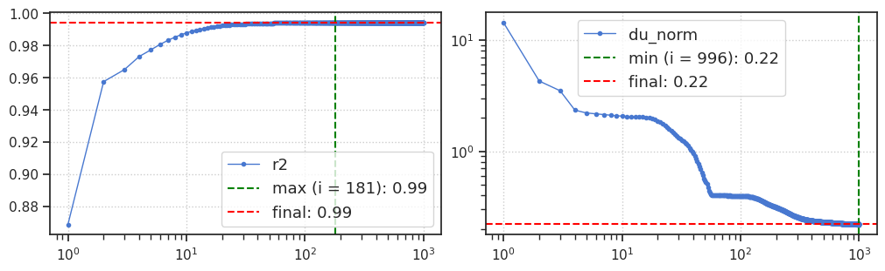
----------------------------------------------------------------------------------------------------
88%|████████████████████████████████████▏ | 275/312 [02:56<00:23, 1.56it/s]
[PROGRESS] 'poisson-<grad|lin>-BALLS64-t-32_b-64_k-96_yoru-1_(2025_03_16,23:16).npy' saved at /home/hadi/Dropbox/git/jb-progress-2025/tmp/results_2025-03
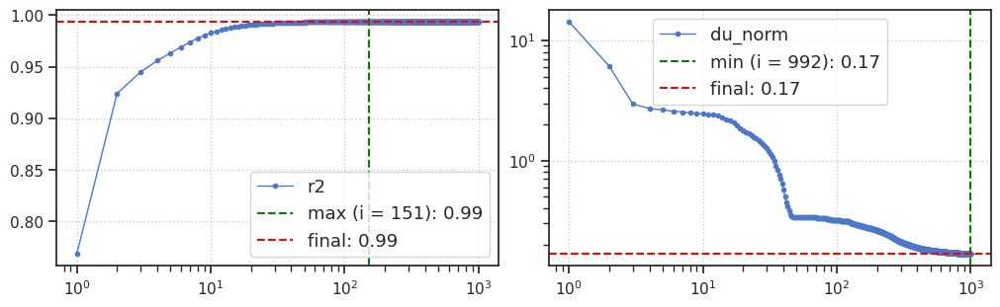
----------------------------------------------------------------------------------------------------
100%|█████████████████████████████████████████| 312/312 [05:55<00:00, 1.14s/it]
Finally, was able to finish#
%%time
perform_analysis(results_dir, device)
0%| | 0/313 [00:00<?, ?it/s]
[PROGRESS] 'poisson-<grad|lin>-BALLS64-t-16_b-8_k-32_chewie-1_(2025_03_09,04:57).npy' saved at /home/hadi/Dropbox/git/jb-progress-2025/tmp/results_2025-03
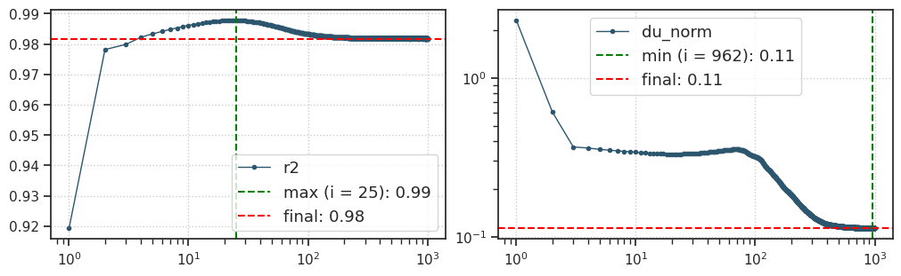
----------------------------------------------------------------------------------------------------
81%|█████████████████████████████████▍ | 255/313 [02:46<00:37, 1.53it/s]
[PROGRESS] 'poisson-<grad|lin>-BALLS64-t-16_b-8_k-64_chewie-1_(2025_03_09,10:06).npy' saved at /home/hadi/Dropbox/git/jb-progress-2025/tmp/results_2025-03
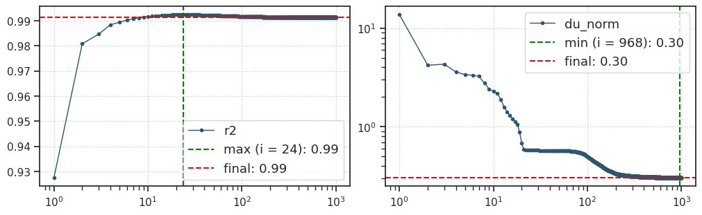
----------------------------------------------------------------------------------------------------
82%|█████████████████████████████████▌ | 256/313 [05:36<01:30, 1.59s/it]
[PROGRESS] 'poisson-<grad|lin>-BALLS64-t-16_b-12_k-64_chewie-1_(2025_03_10,05:31).npy' saved at /home/hadi/Dropbox/git/jb-progress-2025/tmp/results_2025-03
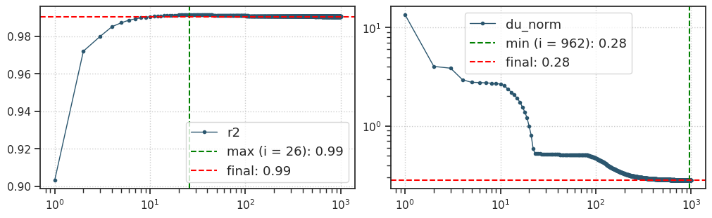
----------------------------------------------------------------------------------------------------
82%|█████████████████████████████████▋ | 257/313 [08:25<02:43, 2.92s/it]
[PROGRESS] 'poisson-<grad|lin>-BALLS64-t-16_b-12_k-96_chewie-1_(2025_03_10,03:02).npy' saved at /home/hadi/Dropbox/git/jb-progress-2025/tmp/results_2025-03
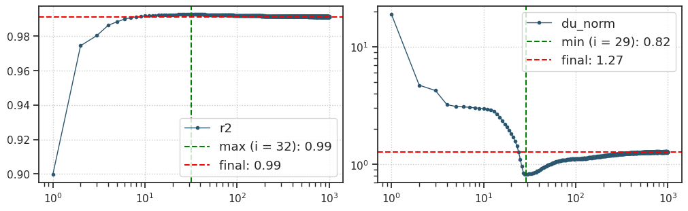
----------------------------------------------------------------------------------------------------
82%|█████████████████████████████████▊ | 258/313 [11:21<04:26, 4.85s/it]
[PROGRESS] 'poisson-<grad|lin>-BALLS64-t-16_b-12_k-128_chewie-1_(2025_03_10,19:10).npy' saved at /home/hadi/Dropbox/git/jb-progress-2025/tmp/results_2025-03
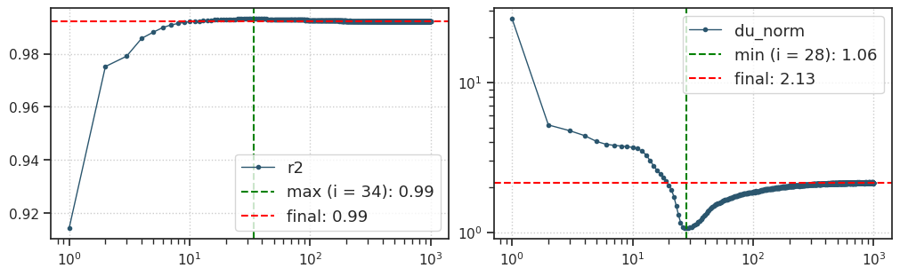
----------------------------------------------------------------------------------------------------
83%|█████████████████████████████████▉ | 259/313 [14:23<06:52, 7.64s/it]
[PROGRESS] 'poisson-<grad|lin>-BALLS64-t-16_b-16_k-32_chewie-1_(2025_03_11,12:19).npy' saved at /home/hadi/Dropbox/git/jb-progress-2025/tmp/results_2025-03
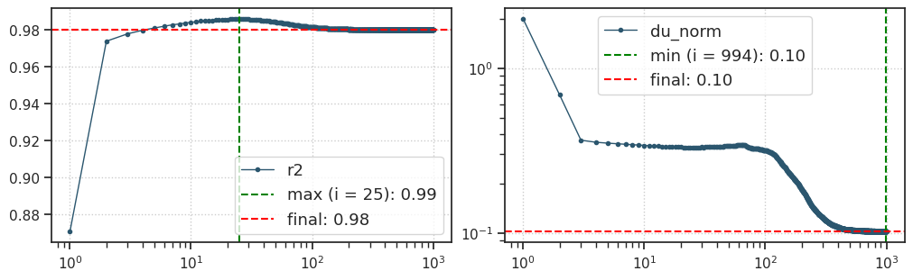
----------------------------------------------------------------------------------------------------
83%|██████████████████████████████████ | 260/313 [17:09<09:48, 11.11s/it]
[PROGRESS] 'poisson-<grad|lin>-BALLS64-t-16_b-16_k-64_chewie-1_(2025_03_11,19:02).npy' saved at /home/hadi/Dropbox/git/jb-progress-2025/tmp/results_2025-03
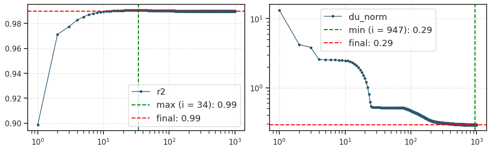
----------------------------------------------------------------------------------------------------
83%|██████████████████████████████████▏ | 261/313 [19:58<13:45, 15.88s/it]
[PROGRESS] 'poisson-<grad|lin>-BALLS64-t-16_b-16_k-96_chewie-1_(2025_03_11,22:35).npy' saved at /home/hadi/Dropbox/git/jb-progress-2025/tmp/results_2025-03
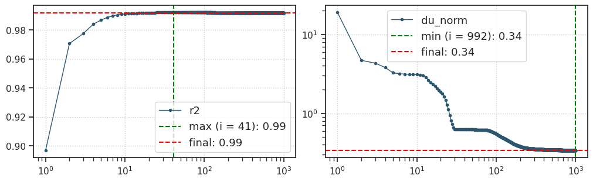
----------------------------------------------------------------------------------------------------
84%|██████████████████████████████████▎ | 262/313 [22:53<19:08, 22.51s/it]
[PROGRESS] 'poisson-<grad|lin>-BALLS64-t-16_b-16_k-128_chewie-1_(2025_03_12,08:52).npy' saved at /home/hadi/Dropbox/git/jb-progress-2025/tmp/results_2025-03
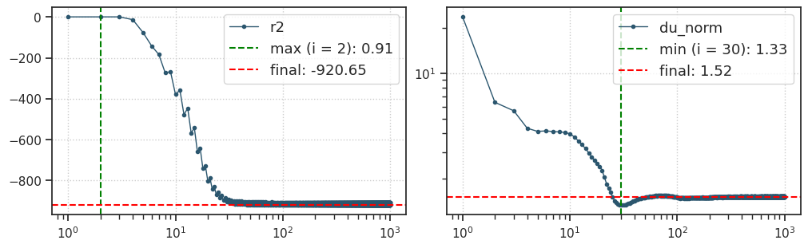
----------------------------------------------------------------------------------------------------
84%|██████████████████████████████████▍ | 263/313 [25:54<26:09, 31.38s/it]
[PROGRESS] 'poisson-<grad|lin>-BALLS64-t-16_b-24_k-32_chewie-1_(2025_03_09,04:54).npy' saved at /home/hadi/Dropbox/git/jb-progress-2025/tmp/results_2025-03
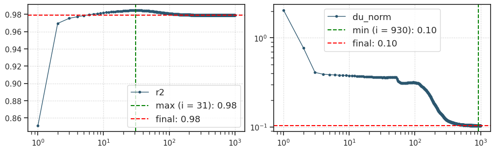
----------------------------------------------------------------------------------------------------
84%|██████████████████████████████████▌ | 264/313 [29:08<35:26, 43.40s/it]
[PROGRESS] 'poisson-<grad|lin>-BALLS64-t-16_b-24_k-64_chewie-1_(2025_03_09,09:13).npy' saved at /home/hadi/Dropbox/git/jb-progress-2025/tmp/results_2025-03
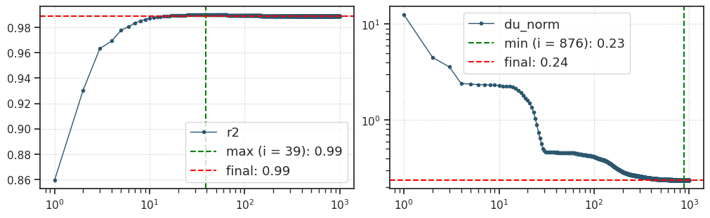
----------------------------------------------------------------------------------------------------
85%|██████████████████████████████████▋ | 265/313 [32:28<46:43, 58.41s/it]
[PROGRESS] 'poisson-<grad|lin>-BALLS64-t-16_b-24_k-96_chewie-1_(2025_03_09,14:03).npy' saved at /home/hadi/Dropbox/git/jb-progress-2025/tmp/results_2025-03
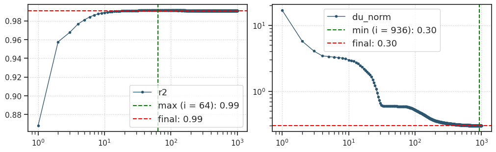
----------------------------------------------------------------------------------------------------
85%|██████████████████████████████████▊ | 266/313 [35:54<59:41, 76.21s/it]
[PROGRESS] 'poisson-<grad|lin>-BALLS64-t-16_b-24_k-128_chewie-1_(2025_03_09,21:20).npy' saved at /home/hadi/Dropbox/git/jb-progress-2025/tmp/results_2025-03
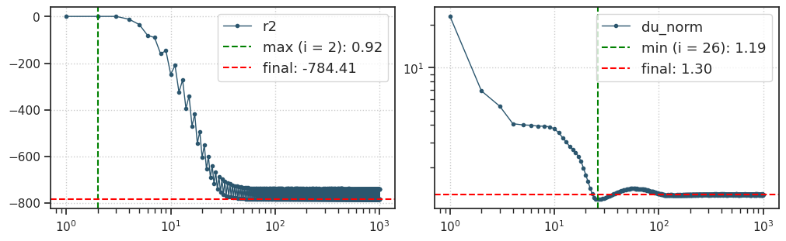
----------------------------------------------------------------------------------------------------
85%|█████████████████████████████████▎ | 267/313 [39:25<1:13:37, 96.03s/it]
[PROGRESS] 'poisson-<grad|lin>-BALLS64-t-16_b-24_k-192_chewie-1_(2025_03_10,05:20).npy' saved at /home/hadi/Dropbox/git/jb-progress-2025/tmp/results_2025-03
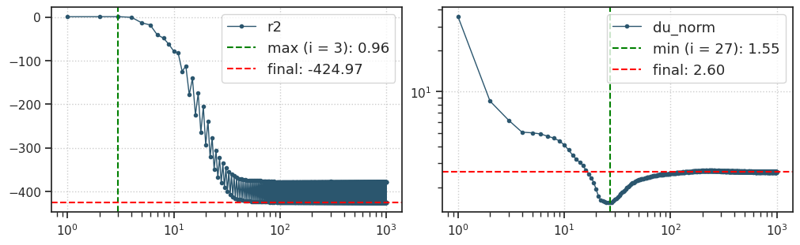
----------------------------------------------------------------------------------------------------
86%|████████████████████████████████▌ | 268/313 [43:13<1:29:05, 118.78s/it]
[PROGRESS] 'poisson-<grad|lin>-BALLS64-t-16_b-32_k-32_chewie-1_(2025_03_10,11:24).npy' saved at /home/hadi/Dropbox/git/jb-progress-2025/tmp/results_2025-03
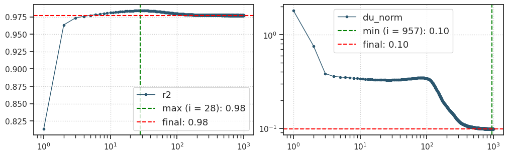
----------------------------------------------------------------------------------------------------
86%|████████████████████████████████▋ | 269/313 [46:31<1:38:40, 134.55s/it]
[PROGRESS] 'poisson-<grad|lin>-BALLS64-t-16_b-32_k-64_chewie-1_(2025_03_10,13:46).npy' saved at /home/hadi/Dropbox/git/jb-progress-2025/tmp/results_2025-03
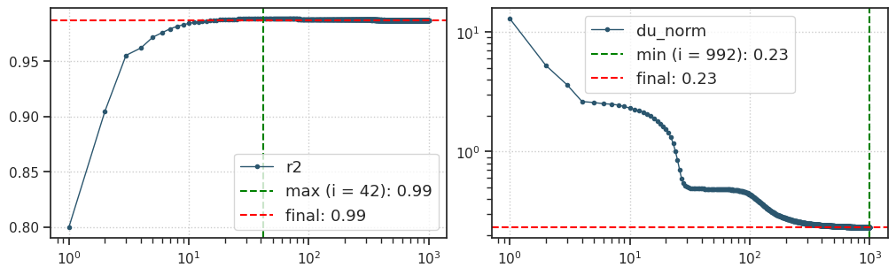
----------------------------------------------------------------------------------------------------
86%|████████████████████████████████▊ | 270/313 [49:50<1:46:37, 148.78s/it]
[PROGRESS] 'poisson-<grad|lin>-BALLS64-t-16_b-32_k-96_chewie-1_(2025_03_10,17:39).npy' saved at /home/hadi/Dropbox/git/jb-progress-2025/tmp/results_2025-03
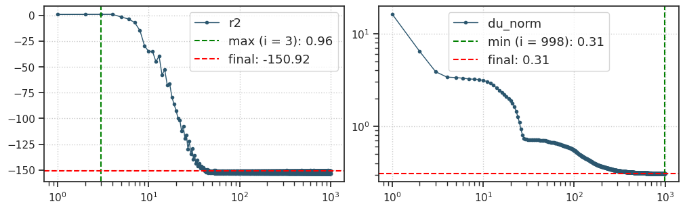
----------------------------------------------------------------------------------------------------
87%|████████████████████████████████▉ | 271/313 [53:17<1:53:58, 162.81s/it]
[PROGRESS] 'poisson-<grad|lin>-BALLS64-t-16_b-32_k-128_chewie-1_(2025_03_11,01:00).npy' saved at /home/hadi/Dropbox/git/jb-progress-2025/tmp/results_2025-03
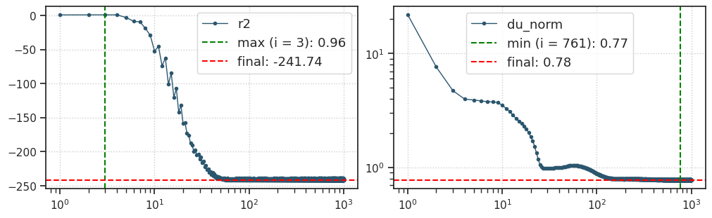
----------------------------------------------------------------------------------------------------
87%|█████████████████████████████████ | 272/313 [56:47<1:59:26, 174.79s/it]
[PROGRESS] 'poisson-<grad|lin>-BALLS64-t-16_b-32_k-192_chewie-1_(2025_03_11,04:22).npy' saved at /home/hadi/Dropbox/git/jb-progress-2025/tmp/results_2025-03
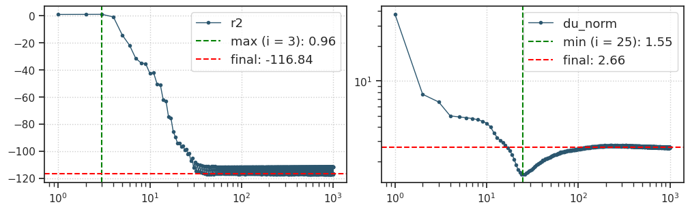
----------------------------------------------------------------------------------------------------
87%|███████████████████████████████▍ | 273/313 [1:00:32<2:05:30, 188.25s/it]
[PROGRESS] 'poisson-<grad|lin>-BALLS64-t-16_b-48_k-64_chewie-1_(2025_03_12,03:08).npy' saved at /home/hadi/Dropbox/git/jb-progress-2025/tmp/results_2025-03
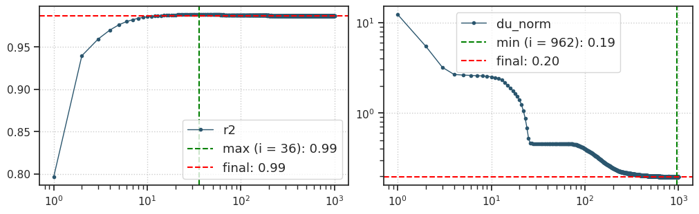
----------------------------------------------------------------------------------------------------
88%|███████████████████████████████▌ | 274/313 [1:03:52<2:04:24, 191.39s/it]
[PROGRESS] 'poisson-<grad|lin>-BALLS64-t-16_b-48_k-96_chewie-1_(2025_03_11,14:59).npy' saved at /home/hadi/Dropbox/git/jb-progress-2025/tmp/results_2025-03
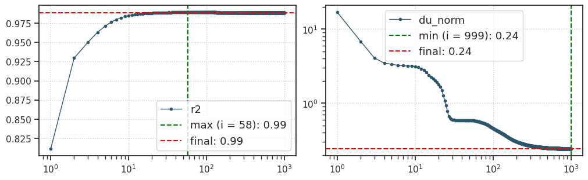
----------------------------------------------------------------------------------------------------
88%|███████████████████████████████▋ | 275/313 [1:07:18<2:03:51, 195.57s/it]
[PROGRESS] 'poisson-<grad|lin>-BALLS64-t-16_b-64_k-32_chewie-1_(2025_03_12,03:09).npy' saved at /home/hadi/Dropbox/git/jb-progress-2025/tmp/results_2025-03
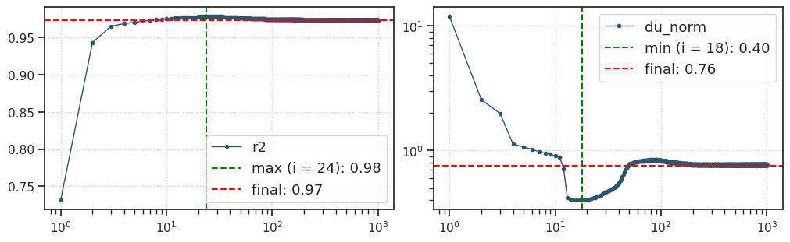
----------------------------------------------------------------------------------------------------
88%|███████████████████████████████▋ | 276/313 [1:10:35<2:00:52, 196.02s/it]
[PROGRESS] 'poisson-<grad|lin>-BALLS64-t-32_b-24_k-64_yoru-1_(2025_03_11,00:22).npy' saved at /home/hadi/Dropbox/git/jb-progress-2025/tmp/results_2025-03
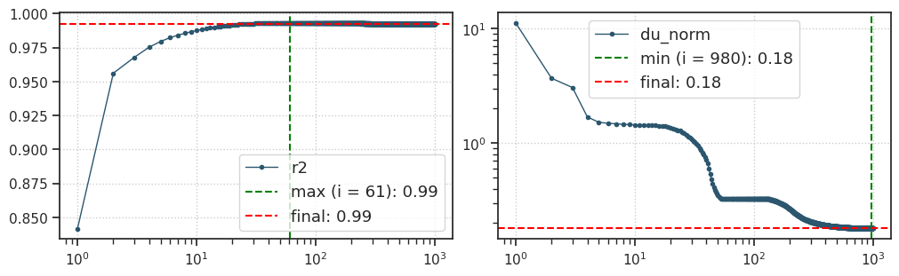
----------------------------------------------------------------------------------------------------
88%|███████████████████████████████▊ | 277/313 [1:13:56<1:58:26, 197.41s/it]
[PROGRESS] 'poisson-<grad|lin>-BALLS64-t-32_b-48_k-64_yoru-1_(2025_03_10,01:08).npy' saved at /home/hadi/Dropbox/git/jb-progress-2025/tmp/results_2025-03
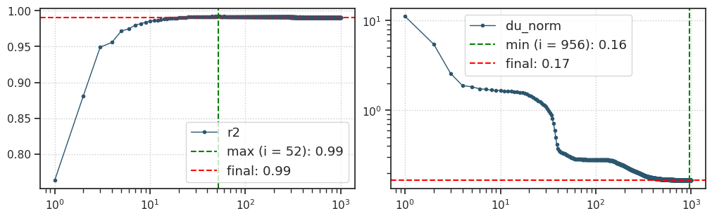
----------------------------------------------------------------------------------------------------
89%|███████████████████████████████▉ | 278/313 [1:17:17<1:55:51, 198.60s/it]
[PROGRESS] 'poisson-<grad|lin>-BALLS64-t-32_b-48_k-96_yoru-1_(2025_03_10,06:07).npy' saved at /home/hadi/Dropbox/git/jb-progress-2025/tmp/results_2025-03
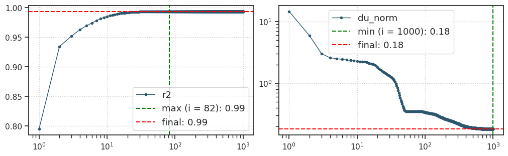
----------------------------------------------------------------------------------------------------
89%|████████████████████████████████ | 279/313 [1:20:45<1:54:02, 201.26s/it]
[PROGRESS] 'poisson-<grad|lin>-BALLS64-t-32_b-64_k-64_yoru-1_(2025_03_11,12:34).npy' saved at /home/hadi/Dropbox/git/jb-progress-2025/tmp/results_2025-03
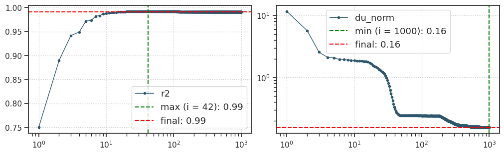
----------------------------------------------------------------------------------------------------
89%|████████████████████████████████▏ | 280/313 [1:24:06<1:50:43, 201.32s/it]
[PROGRESS] 'poisson-<grad|lin>-BALLS64_mach-1_(2025_03_12,03:40).npy' saved at /home/hadi/Dropbox/git/jb-progress-2025/tmp/results_2025-03
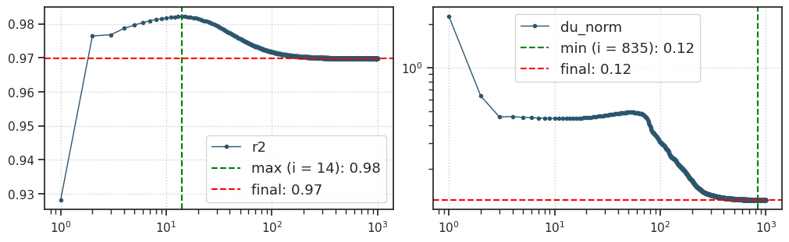
----------------------------------------------------------------------------------------------------
90%|████████████████████████████████▎ | 281/313 [1:27:25<1:46:55, 200.50s/it]
[PROGRESS] 'poisson-<grad|lin>-BALLS64_mach-1_(2025_03_12,07:35).npy' saved at /home/hadi/Dropbox/git/jb-progress-2025/tmp/results_2025-03
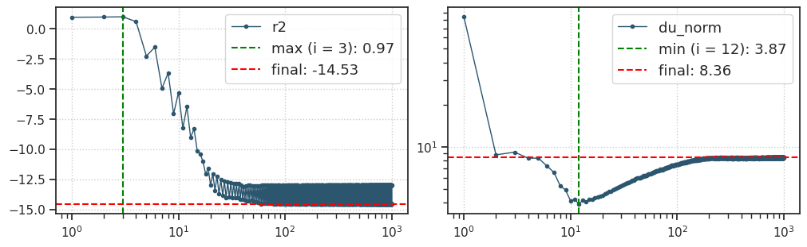
----------------------------------------------------------------------------------------------------
90%|████████████████████████████████▍ | 282/313 [1:31:28<1:50:09, 213.20s/it]
[PROGRESS] 'poisson-<grad|lin>-BALLS64_mach-1_(2025_03_12,08:25).npy' saved at /home/hadi/Dropbox/git/jb-progress-2025/tmp/results_2025-03
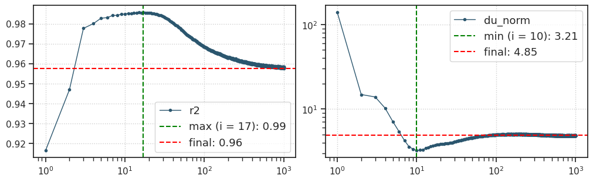
----------------------------------------------------------------------------------------------------
92%|████████████████████████████████████ | 289/313 [1:36:33<11:31, 28.83s/it]
[PROGRESS] 'poisson-<grad|lin>-vH16-t-8_b-4_mach-1_(2025_03_06,23:08).npy' saved at /home/hadi/Dropbox/git/jb-progress-2025/tmp/results_2025-03
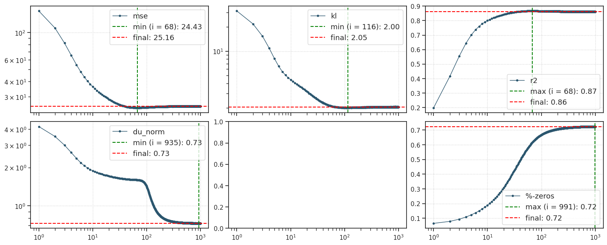
----------------------------------------------------------------------------------------------------
93%|███████████████████████████████████▏ | 290/313 [1:41:41<43:11, 112.66s/it]
[PROGRESS] 'poisson-<grad|lin>-vH16-t-8_b-8_mach-1_(2025_03_07,07:44).npy' saved at /home/hadi/Dropbox/git/jb-progress-2025/tmp/results_2025-03
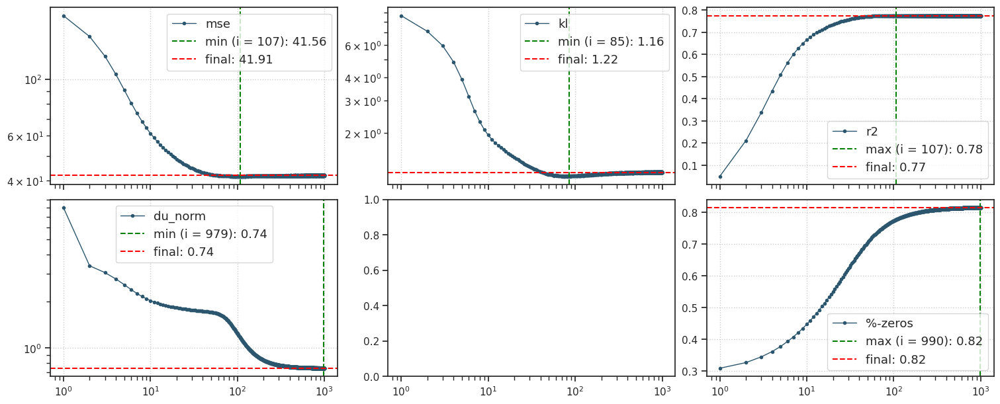
----------------------------------------------------------------------------------------------------
93%|█████████████████████████████████▍ | 291/313 [1:47:21<1:06:16, 180.73s/it]
[PROGRESS] 'poisson-<grad|lin>-vH16-t-8_b-10_mach-1_(2025_03_07,12:38).npy' saved at /home/hadi/Dropbox/git/jb-progress-2025/tmp/results_2025-03
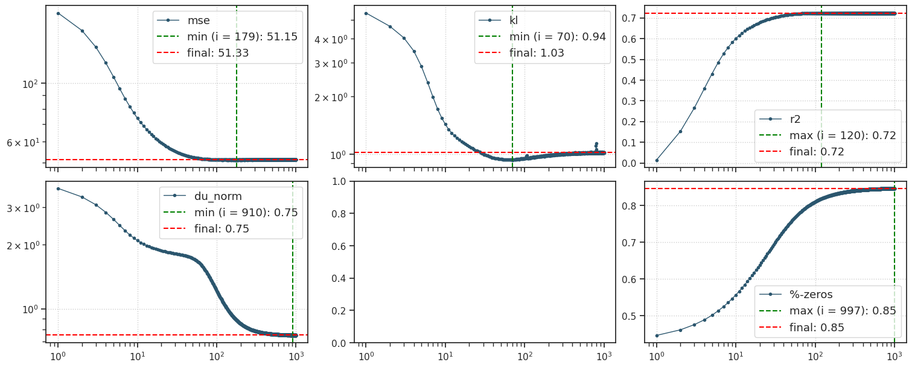
----------------------------------------------------------------------------------------------------
93%|█████████████████████████████████▌ | 292/313 [1:53:12<1:21:06, 231.72s/it]
[PROGRESS] 'poisson-<grad|lin>-vH16-t-8_b-12_mach-1_(2025_03_08,08:25).npy' saved at /home/hadi/Dropbox/git/jb-progress-2025/tmp/results_2025-03
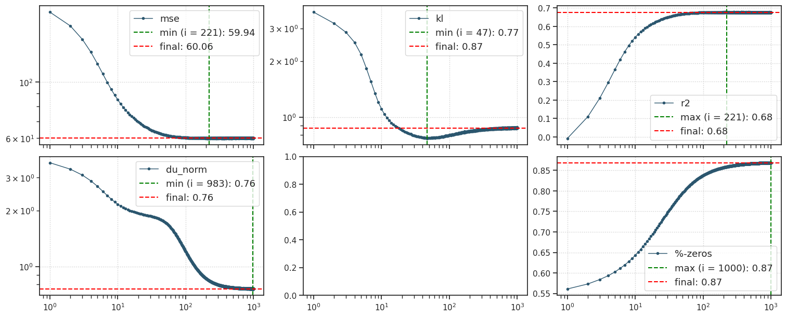
----------------------------------------------------------------------------------------------------
94%|█████████████████████████████████▋ | 293/313 [1:58:23<1:25:09, 255.47s/it]
[PROGRESS] 'poisson-<grad|lin>-vH16-t-8_b-16_mach-1_(2025_03_06,23:12).npy' saved at /home/hadi/Dropbox/git/jb-progress-2025/tmp/results_2025-03
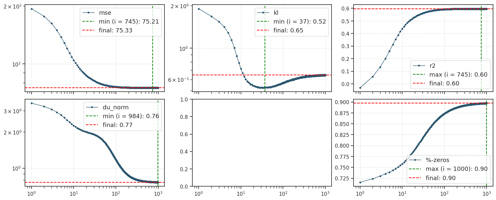
----------------------------------------------------------------------------------------------------
94%|█████████████████████████████████▊ | 294/313 [2:03:26<1:25:27, 269.85s/it]
[PROGRESS] 'poisson-<grad|lin>-vH16-t-8_b-20_mach-1_(2025_03_07,07:49).npy' saved at /home/hadi/Dropbox/git/jb-progress-2025/tmp/results_2025-03
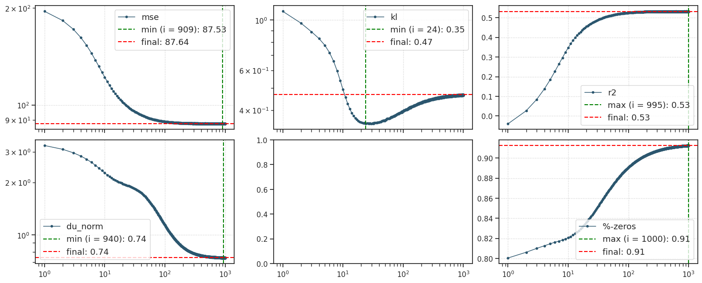
----------------------------------------------------------------------------------------------------
94%|█████████████████████████████████▉ | 295/313 [2:08:27<1:23:44, 279.13s/it]
[PROGRESS] 'poisson-<grad|lin>-vH16-t-8_b-24_mach-1_(2025_03_07,12:42).npy' saved at /home/hadi/Dropbox/git/jb-progress-2025/tmp/results_2025-03
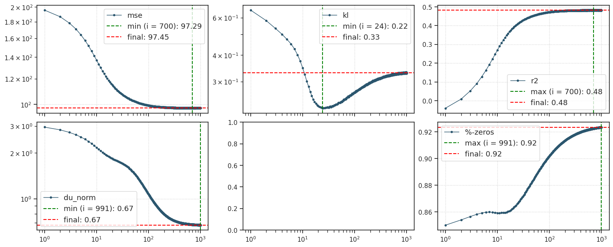
----------------------------------------------------------------------------------------------------
95%|██████████████████████████████████ | 296/313 [2:13:29<1:21:02, 286.02s/it]
[PROGRESS] 'poisson-<grad|lin>-vH16-t-8_b-32_mach-1_(2025_03_08,08:20).npy' saved at /home/hadi/Dropbox/git/jb-progress-2025/tmp/results_2025-03
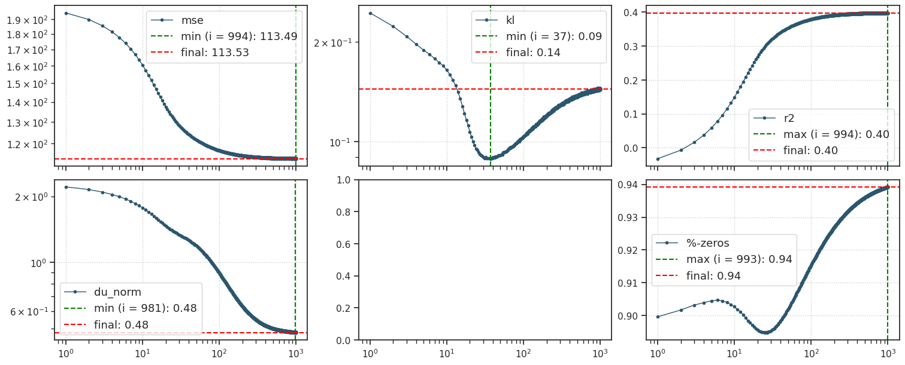
----------------------------------------------------------------------------------------------------
95%|██████████████████████████████████▏ | 297/313 [2:18:29<1:17:25, 290.36s/it]
[PROGRESS] 'poisson-<grad|lin>-vH16-t-16_b-8_mach-1_(2025_03_07,07:31).npy' saved at /home/hadi/Dropbox/git/jb-progress-2025/tmp/results_2025-03
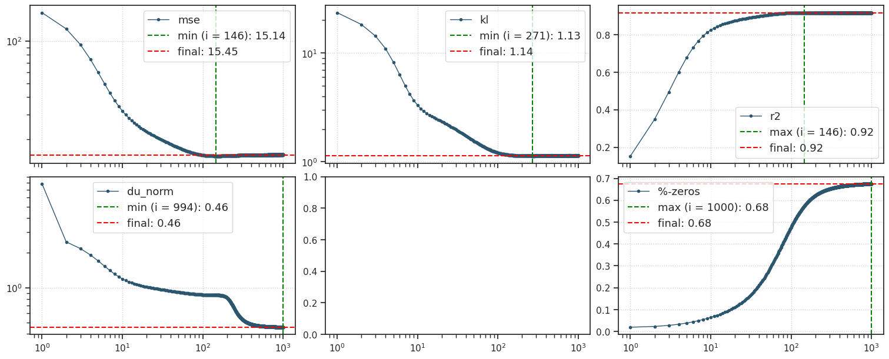
----------------------------------------------------------------------------------------------------
95%|██████████████████████████████████▎ | 298/313 [2:23:33<1:13:32, 294.19s/it]
[PROGRESS] 'poisson-<grad|lin>-vH16-t-16_b-12_mach-1_(2025_03_07,02:38).npy' saved at /home/hadi/Dropbox/git/jb-progress-2025/tmp/results_2025-03
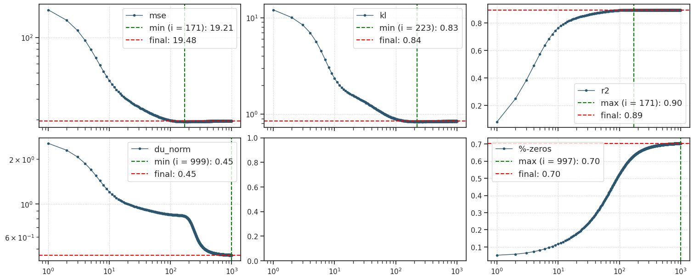
----------------------------------------------------------------------------------------------------
96%|██████████████████████████████████▍ | 299/313 [2:28:35<1:09:14, 296.78s/it]
[PROGRESS] 'poisson-<grad|lin>-vH16-t-16_b-16_chewie-1_(2025_03_08,11:55).npy' saved at /home/hadi/Dropbox/git/jb-progress-2025/tmp/results_2025-03
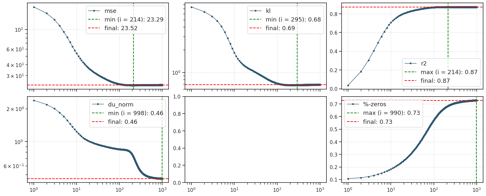
----------------------------------------------------------------------------------------------------
96%|██████████████████████████████████▌ | 300/313 [2:33:39<1:04:46, 298.93s/it]
[PROGRESS] 'poisson-<grad|lin>-vH16-t-16_b-20_mach-1_(2025_03_08,05:23).npy' saved at /home/hadi/Dropbox/git/jb-progress-2025/tmp/results_2025-03
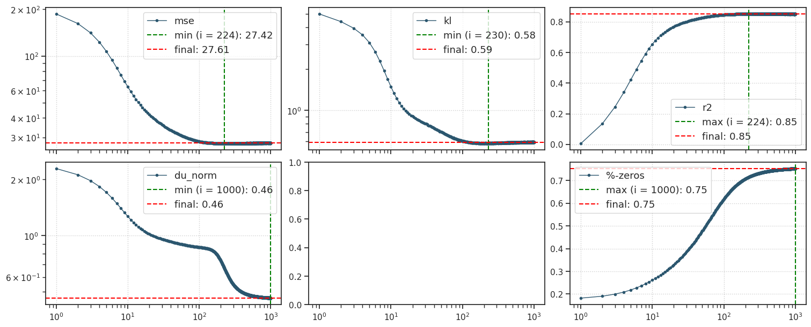
----------------------------------------------------------------------------------------------------
96%|██████████████████████████████████▌ | 301/313 [2:38:46<1:00:14, 301.20s/it]
[PROGRESS] 'poisson-<grad|lin>-vH16-t-16_b-24_mach-1_(2025_03_07,07:38).npy' saved at /home/hadi/Dropbox/git/jb-progress-2025/tmp/results_2025-03
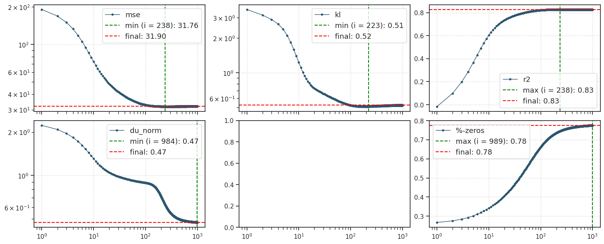
----------------------------------------------------------------------------------------------------
96%|████████████████████████████████████▋ | 302/313 [2:43:55<55:39, 303.61s/it]
[PROGRESS] 'poisson-<grad|lin>-vH16-t-16_b-32_mach-1_(2025_03_07,02:42).npy' saved at /home/hadi/Dropbox/git/jb-progress-2025/tmp/results_2025-03
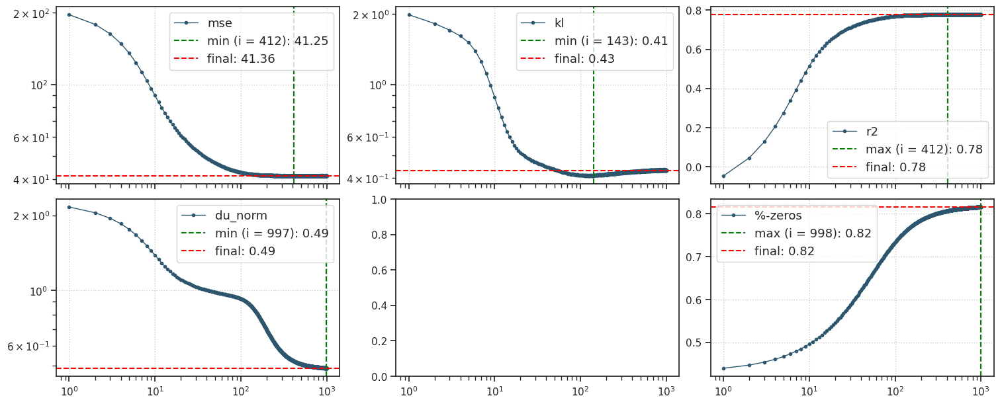
----------------------------------------------------------------------------------------------------
97%|████████████████████████████████████▊ | 303/313 [2:49:09<51:06, 306.61s/it]
[PROGRESS] 'poisson-<grad|lin>-vH16-t-16_b-48_mach-1_(2025_03_07,21:27).npy' saved at /home/hadi/Dropbox/git/jb-progress-2025/tmp/results_2025-03
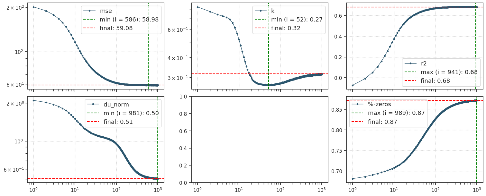
----------------------------------------------------------------------------------------------------
97%|████████████████████████████████████▉ | 304/313 [2:54:15<45:58, 306.50s/it]
[PROGRESS] 'poisson-<grad|lin>-vH16-t-16_b-64_mach-1_(2025_03_08,05:15).npy' saved at /home/hadi/Dropbox/git/jb-progress-2025/tmp/results_2025-03
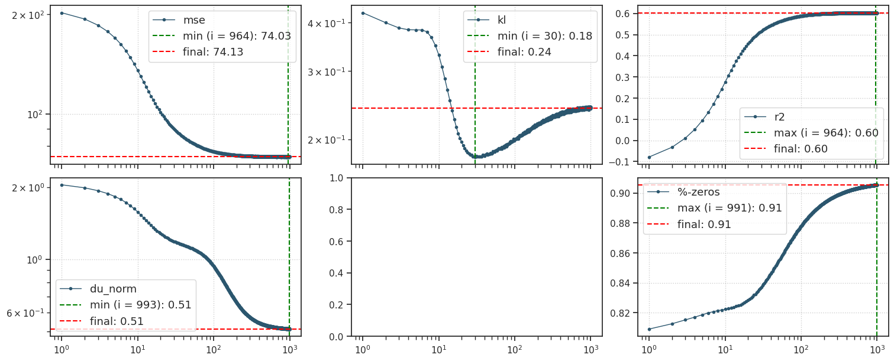
----------------------------------------------------------------------------------------------------
97%|█████████████████████████████████████ | 305/313 [2:59:26<41:04, 308.03s/it]
[PROGRESS] 'poisson-<grad|lin>-vH16-t-32_b-16_mach-1_(2025_03_08,00:41).npy' saved at /home/hadi/Dropbox/git/jb-progress-2025/tmp/results_2025-03
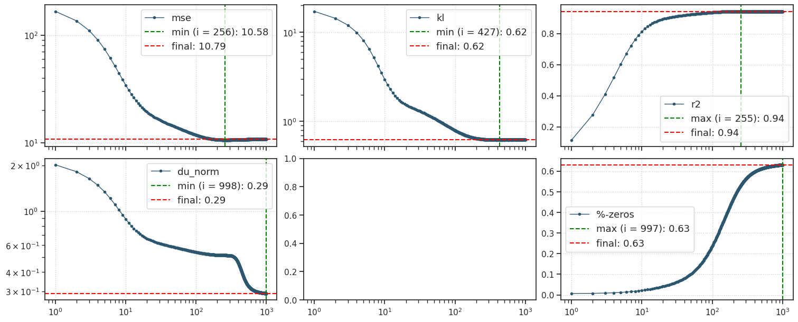
----------------------------------------------------------------------------------------------------
98%|█████████████████████████████████████▏| 306/313 [3:04:39<36:05, 309.41s/it]
[PROGRESS] 'poisson-<grad|lin>-vH16-t-32_b-24_mach-1_(2025_03_07,09:44).npy' saved at /home/hadi/Dropbox/git/jb-progress-2025/tmp/results_2025-03
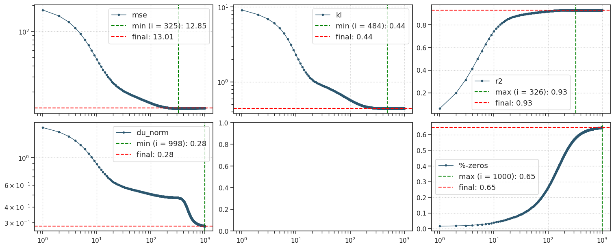
----------------------------------------------------------------------------------------------------
98%|█████████████████████████████████████▎| 307/313 [3:09:50<30:58, 309.78s/it]
[PROGRESS] 'poisson-<grad|lin>-vH16-t-32_b-32_mach-1_(2025_03_08,00:42).npy' saved at /home/hadi/Dropbox/git/jb-progress-2025/tmp/results_2025-03
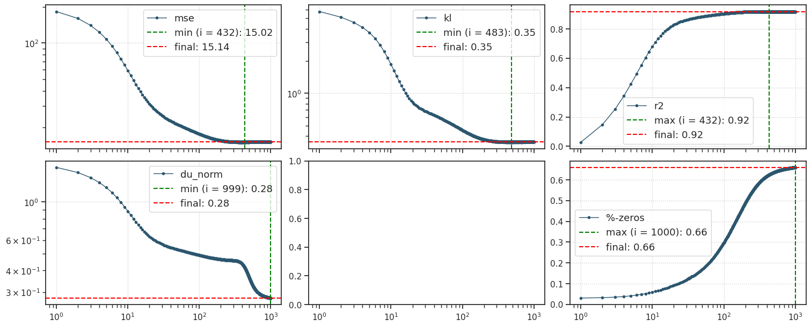
----------------------------------------------------------------------------------------------------
98%|█████████████████████████████████████▍| 308/313 [3:15:02<25:52, 310.48s/it]
[PROGRESS] 'poisson-<grad|lin>-vH16-t-32_b-40_mach-1_(2025_03_07,22:26).npy' saved at /home/hadi/Dropbox/git/jb-progress-2025/tmp/results_2025-03
----------------------------------------------------------------------------------------------------
99%|█████████████████████████████████████▌| 309/313 [3:20:16<20:46, 311.71s/it]
[PROGRESS] 'poisson-<grad|lin>-vH16-t-32_b-48_mach-1_(2025_03_08,06:59).npy' saved at /home/hadi/Dropbox/git/jb-progress-2025/tmp/results_2025-03
----------------------------------------------------------------------------------------------------
99%|█████████████████████████████████████▋| 310/313 [3:25:20<15:28, 309.39s/it]
[PROGRESS] 'poisson-<grad|lin>-vH16-t-32_b-64_mach-1_(2025_03_07,09:37).npy' saved at /home/hadi/Dropbox/git/jb-progress-2025/tmp/results_2025-03
----------------------------------------------------------------------------------------------------
99%|█████████████████████████████████████▊| 311/313 [3:30:41<10:25, 312.73s/it]
[PROGRESS] 'poisson-<grad|lin>-vH16-t-32_b-96_mach-1_(2025_03_08,00:31).npy' saved at /home/hadi/Dropbox/git/jb-progress-2025/tmp/results_2025-03
----------------------------------------------------------------------------------------------------
100%|█████████████████████████████████████▉| 312/313 [3:36:03<05:15, 315.59s/it]
[PROGRESS] 'poisson-<grad|lin>-vH16-t-32_b-128_chewie-1_(2025_03_08,13:18).npy' saved at /home/hadi/Dropbox/git/jb-progress-2025/tmp/results_2025-03
----------------------------------------------------------------------------------------------------
100%|███████████████████████████████████████| 313/313 [3:41:16<00:00, 42.42s/it]
CPU times: user 5h 18min 24s, sys: 45min 15s, total: 6h 3min 40s
Wall time: 3h 41min 16s
> 4Gib (pickle error)#
I cancelled#
bc changed code to accept data batch size
data_batch_sz=5000 should seed thigns up